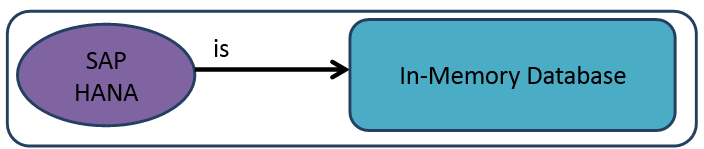
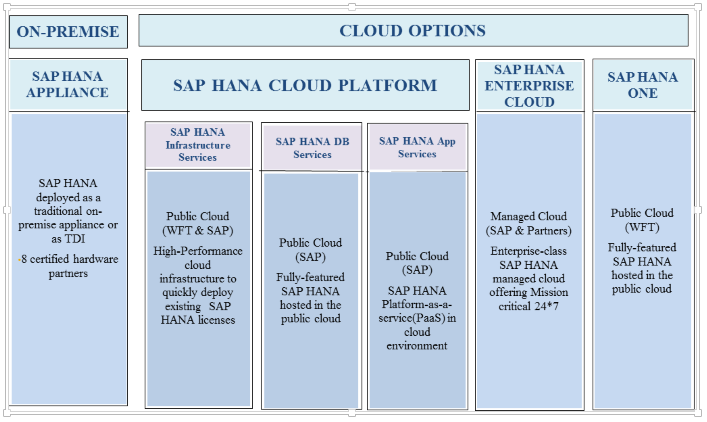
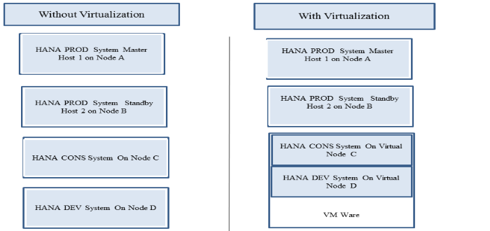
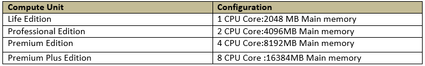

SAP HANA ON CLOUD
Introduction to HANA
HANA refers to High Performance Analytic Appliance. HANA is a database model which is made to work in the memory termed as in-memory database.
SAP Replicated Enqueue with High Availability
A typical high availability solution in a SAP environment does not address the failure of the enqueue service. Leveraging the firm's deep expertise in the SAP application and the associated infrastructure components, the SAP Replicated Enqueue with High Availability solution facilitates the elimination of single points of failure in a SAP environment at the operating system, storage, network, database and application level, thereby minimizing downtime in the customer's environment. This solution enables seamless failover of the enqueue service along with the rest of the components to achieve true high availability in the SAP landscape.
SAP Integration with VCS, MC Service Guard and HACMP
High Availability within an SAP or Oracle landscape is a requirement. WFT's SAP High availability solution addresses the different Single Points of Failure within a SAP Landscape like the Message server, Enqueue server and Web dispatcher. WFT solutions also integrate DB and Infrastructure tools to provide application availability as defined by your company's SLA's. Our engineers look to employ all available technologies including SAP Replicated En-Queue, Oracle RAC and server clustering to achieve high availability.
- SAP HANA is SAP AG's implementation of in-memory database technology.
- HANA DB take advantage of the low cost of main memory (RAM), data processing abilities of multi-core processors and the fast data access of solid state drives relative to traditional hard drives to deliver better performance of analytical and transactional applications.
- HANA is 100% ACID complaint
SAP HANA ON CLOUD Platform is a next generation cloud platform which based on breakthrough in-memory technology as delivered by SAP. This gives Developers where they can quickly build, highly scalable applications that leverage embedded as well as high speed and scale of SAP HANA. The apps will deliver good experiences which includes instant mobile access that delight users and meet the business requirements.
Most of them know SAP HANA is more than just an in-memory database, but it's a complete application development platform .Three distinct Scenarios SAP HANA on CLOUD platform offers .SAP HANA on CLOUD Platform is a Platform as a Service offering(PaaS)
- SAP HANA App Services
- SAP HANA DB Services
- SAP HANA infrastructure services
SAP HANA App Services (Paas)
This includes all the capabilities for Database Service and in addition it provides shared Application Services basically required for development of existing solutions as it resides either will be on-premise or in cloud. The rapid development of cloud application this platform provides a vast set of different platform services for most common in Software architecture such as persistence, connectivity
SAP HANA on CLOUD technology provides specialized capabilities:
Mobile: SAP Mobile Platform Enterprise Edition cloud version
- SAP HANA Cloud Portal
- SAP Lumira Cloud
- Gateway as a Service
- SAP HANA Cloud Integration
SAP HANA DB Services (DBaaS)
This provides both infrastructure and license subscriptions for SAP HANA as it offers two offer
A base and Platform Edition. The Base edition includes core DB services, development services and libraries while the platform edition also includes advanced features such as predictive, search, graph, text analysis and geo-spatial
The above two editions provides native development capabilities eg as SQL Script, XS(Extended Application Services (xs)) and River. There is ETL-Tool is preconfigured and ready to used for initial and delta loads.
SAP HANA DB Services allows fast deployment operational flexibility and faster time -to-time market to develop and deploy uses cases that require up to 1 TB Memory.
1Tb of memory is the largest memory configuration available for SAP HANADB services .However actual available memory may be less than the configured memory due to overhead.
Available Editions in SAP HANA DB Services:
SAP HANA Infrastructure Services (IaaS)
SAP HANA Infrastructure Services provides subscriptions for those customers who already has their existing license and those who want to get up and running quickly without investing in hardware.
IaaS Features provide- One of the best flexibility deployment options: 128GB, 256GB, 512GB, and 1TB and available on exclusively HANA marketplace.
- Build on a secure, scalable infrastructure.
- Certified operations
- Advance Network Security
- World class Data Centers
- Built in Compliance ,Integrity and confidentiality
- Reliable Data backup
Highlights of HANA
- Real time decision
- TCO reduction
- Next generation Technologies
Major industries lack at the analytics capability required to extract information from various organizations and load that data into action.
Hana in-memory will provide the speed and agility to power analytics at performance levels while remaining cost effective.
Business Benefits
SAP HANA ON CLOUD have full benefits:
Accelerate Time To Value: SAP HANA on cloud gives you quickly build and deploy business and end users applications which deliver's critical new functionality to meet emerging business needs when connecting with customers in more engaging experience.
Extension the Value of Current Applications: Our current applications are running on premise or in the Cloud. Whether they rely on data from SAP or non-SAP software .The Platform will streamline the integration of your new applications at lowest possible total cost of ownership.
Developer productivity increase: Open programming supports standards and provides a low barrier to entry for Developers. They can be productive from the start in build the enterprise application that can be integrated with SAP or non-SAP solution. In this No new code is required.
SAP HANA on Cloud Platform provides the following services.
- Connectivity Services: SAP HANA on Cloud platform gives a secure, reliable and easy- to use for business systems running either on premise or in a cloud, As SAP HANA on Cloud provides a trusted channel to our business systems parallely at the same time our IT infrastructure has complete control .The connectivity service provides the use cases show how can we make connections to Internet services and on-premise network.
- Using Internet Service in Cloud Application: This Internet services using Apache HTTP Client and provides the connectivity enabled and Web Application can be deployed on local server and on the cloud
- Persistence Service: SAP HANA on Cloud platform provides in-memory and relational persistence. Complete maintenance activities such as data replication, backup and recovery are handled by platform.
- Document Service: This Document service gives a content repository for unstructured or sem- structured content. When application accesses it using the OASIS standard protocol Content Management Interoperability Services (CMIIS).The application requires the services used by the provided client library.
- Identity Service: This Identity service is responsible for identification management and authentication requires SAP HANA on CLOUD. One more feature this provide the enabling of Single -sign-On(SSO) between different applications running with SAP HANA on Cloud Based ,as depends on the Security Assertion Markup Language (SAML)2.0.
- Feedback Services: This Services mainly used for Developers, Customers and the associated Partners to collect the data for the applications..The main feature is that this gives the user detailed text analysis with the positive, negative, or neutral.
SAP HANA ON CLOUD DEPLOYMENT PHASES:
SAP HANA Enterprise cloud: This is Real time and cloud elasticity for ERP customers.SAP HANA Enterprise cloud provides mission critical ,global 24/7 operations.
- This provides 24/7 customer support availability.
- 100% datacenter availability.
- SAP experts in our operations center.
- Enterprise grade service availability.
- Disaster recovery solutions for mission critical system.
- Private cloud + Managed service=SAP HANA Enterprise Cloud
- This gives fast time- to value at reduced cost and risk.
SAP HANA Virtualization (On-Premise &Cloud): Present the only supported SAP virtualization solution is Vmware v Sphere 5.5 and 5.1 on HANA SP05.Ther are some restrictions
Limited to non Productive and non performance critical use. This requires only single node configuration and max 64 virtual cores /512 GB RAM (recommended).No over commit of CPU /Memory. No HANA DB clusters. Hardware must be validated to be used with SAP HANA. Preinstalled VM is provided through certified SAP appliance vendor or if required Tailored Data center Integration is being used.
SAP HANA ON CLOUD FUNCTIONALITIES:
Data Synchronization: Synchronization technology and exchanging the data among relational database and non relational data source .In this SAP SQL anywhere MobiLink as - a service has availability in SAP HANA on cloud platform.
Cockpit: This new functionalities provide on SAP HANA ON CLOUD with a new role: Support and User. This role mainly designed for technical support engineers and they will allow to read all the data related to an account, including metadata, configuration settings, and log files. Database administration has to assign the appropriate database permissions to read database contents.
Eclipse Tools: This tool has following 2 enhancements.
- The auto complete feature: This feature enabled for the Account Name, User Name and Database user fields in plug-in SAP HANA Cloud Platform Tools for Connecting to SAP HANA Systems.
- The Server view: In Eclipse Tool, Servers view provides direct links to the application dashboard in the cockpit and the application URLs.
- Console client: This is an enhancement in SAP HANA on Cloud and we can choose where the logs from a command output will be displayed in log files or in console client.
SAP UI5: This is an enhancement distribution 1.22.9 for java and HTML 5 application
Runtime for Java: The SAP HANA cloud Runtime for java comprises the components which create the environment for provisioning and running applications SAP HANA on cloud. This runtime is represented by java virtual machine.
Components of SAP HANA ON CLOUD:
JAVA VIRTUAL MACHINE:SAP HANA ON CLOUD infrastructure major runs on SAP own implementation of a Java Virtual Machine -SAP Java Virtual Machine(JVM).SAP JVM is a fully certified Java Standard Edition for java 6 and 7.It is derived from oracle but enhanced with several supportability features.
Application Runtime Container: Major applications developed on SAP HANA CLOUD run on a modular and lightweight runtime container which allows them to use standard JAVA EE API's and platform services that are centrally provides shared across the platform.
Computing Unit:A computing unit is a virtualized hardware on which a SAP HANA Cluod application runs.SAP HANA Cloud Offers four standard sizes of computing units according to provided resources.
For Developer accounts they provide only Lite Edition
To customers accounts all sizes of compute units are available .During deployment customers can specify the compute unit on which they want their application to run.